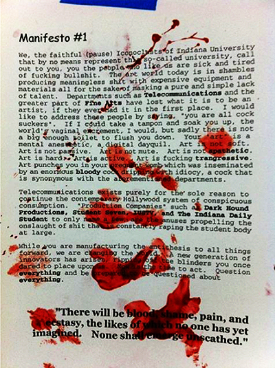

THEORY BEYOND THE CODES
In Situ: Site Specific Art, Digital Code and the Politics of Speed
Joan Hawkins
"There will be blood, shame, pain and ecstasy, the likes of which no one has yet imagined. None shall emerge unscathed."
Nick Zedd
Cinema of Transgression Manifesto, 1985 [1]
For several years I have been writing essays that interrogate the relationship between theory and situation. Typically, these essays begin with a single event and then rhizomatically develop connections between realpolitik, theory, epistemology, art, space and time. [2] Implicit in this method is something of a Badouian view of the event as something that is "both situated -- it is the event of this or that situation -- and supplementary." [3] But I am also indebted here to Žižek, who views the event in less miraculous terms than Badiou, seeing it as a temporary disturbance in the signifying chain, as something which has the potential of opening up deeper underlying truths. [4] Like a breach in China Miéville's dizzying novel The City and The City, the event is dangerous because it temporarily reveals what we have systematically learned to un-see; it reveals what ideology generally masks. [5]
While Žižek uses the event as a means to address social action, I have been interested in the way the event opens up critical and theoretical spaces, the way in which it provides a zone for us to revisit theoretical concepts outside the abstract arena of purely philosophical discourse. What I keep revisiting is the way in which the event provides a bridge for discussing continental theory alongside politics -- both academic and national/international politics; what I keep revisiting is the way in which such discussion reveals the fissures in both the hegemonic sociopolitical system and in theory itself. In that sense, I am interested in the dialectical relationship between theory and the event, in a method which allows the two terms to collide and yield, if not a new third term, at least a gesture toward a synthetic approach.
This essay, too, uses an event as a jumping off point, as "an originary finite locus for an ensuing ... process" of interrogation. [6] In this case, I want to begin with a scandal that marked a site-specific art installation at the school where I teach, and interrogate its relationship to aesthetic and sociopolitical theories of situation, space, speed and time. It is an essay about the politics and aesthetics of space and code; the argument builds slowly, since it needs to lay a sort of foundation for the key points it introduces at the end.
Locus of Origin: The Event
On the evening of Tuesday Feb 8, 2011, flyers entitled "Manifesto #1" were posted around the campus where I teach. The anonymous flyers criticized the current state of the art world, the University departments of Telecommunications and Fine Arts, two student media groups, and the student newspaper. According to a memo circulated by the provost (one of the three main administrators of the University), the flyers "contained violent language and were splattered with red paint to suggest blood. (Portions of the text seem to have been cribbed from Nick Zedd's Cinema of Transgression Manifesto)."
In fact, the entire manifesto ("Manifesto #1") was an homage to Zedd's earlier one, and it ended with the Nick Zedd quote I used as an epigram for this essay (see figure 1). A quick google search led campus authorities to the Wikipedia entry for Cinema of Transgression, where Zedd's manifesto is reproduced in its entirety. [7]

Figure 1
Because "Manifesto #1" contains language "that could be construed to threaten violence," the Provost announced that the campus police were investigating the issue. Indeed, within a few hours of their discovery, the manifestoes had largely disappeared from the University halls and walls, and police were a heavy presence in both the Fine Arts and Telecommunications buildings.
Thanks to Wikipedia, however, things took an even more nervous turn. On its Cinema of Transgression page, the online encyclopedia lists precursors to the Transgression movement. "The Cinema of Transgression shares a legacy with underground film-makers Jack Smith, Andy Warhol, John Waters and Kenneth Anger," the site notes. Now Kenneth Anger, one of the aforementioned "precursors," was scheduled to give a talk on campus Friday, Feb 11, in conjunction with a special screening of his films Fireworks (1947) and Scorpio Rising (1964). Rumors began flying fast and furious. Some thought that Dr. Anger himself had organized the leafleting as part of a publicity stunt. Others were afraid that the flyers were a veiled threat against the noted director. By Wednesday evening, a security guard had been hired to protect Dr. Anger and the FBI had been notified. The local Fox News television station picked up the story, and in what must be one of the strangest turns in avant-garde film history, explained the Cinema of Transgression to its mainstream viewing audience.
It is easy from this vantage point to read the "Manifesto" affair as an overreaction. To be fair to the University, though, "Manifesto #1" appeared in the aftermath of the January 8, 2011 Arizona shooting that killed 6 people and wounded 13, including U.S. Representative Gabrielle Giffords. Jared Loughner, the suspect in the case, had been featured on broadcast news. More importantly for our purposes, Pima Community College where Loughner had been a student had been featured on the news. I personally heard at least three interviews (including one on NPR) with classmates and professors who spoke about Loughner's erratic and disruptive behavior in his math and poetry classes. In each of these stories, the College's response to Loughner's behavior was the driving issue -- had the school authorities behaved appropriately, had they acted quickly enough, should they have done something else or something different, something more to contain the threat that the disturbed Loughner apparently (again from the reporter's vantage point) so clearly posed? A video Loughner had shot at the school was posted on the ABC News website, further evidence it would seem that some school authority should have intervened. [8] What exactly that authority should have done is not specified.
In response to the Arizona shooting, campus authorities at our school moved fairly quickly to issue guidelines regarding student behavior. On January 27, 2011, we received a memo from the Dean of Faculties (the administrator in charge of the Professoriate) explaining how to handle disruptive and disturbing student behavior. "Manifesto #1" appeared less than two weeks later, during a time of heightened anxiety over manifestations of "troubled" and unorthodox conduct. [9]
What interests me most about this particular panic-scene is its digital cosmology and the peculiarly digital trauma it enacted. While the physical flyers displaying "Manifesto #1" disappeared quickly from targeted buildings on campus, a pdf file of the manifesto went viral. Not only did I receive copies from at least three University administrators (who sent it out as a precautionary alert), but staff, students and former students from as far away as Washington D.C. sent me copies as well. This essay then is less about the troubled space of University politics than it is about media. It represents an attempt to theorize what happens when a site-specific artistic and pedagogical intervention meets digital code. Its interest is the panic that site-specific texts unleash when they are unmoored in space and time, and go viral.
Beyond that, however, it is also about manifestoes and the possibility of site specific art in a digital age. Or perhaps more to the point, what kind of site specific digital art is possible.
Cinema of Transgression
Wikipedia situates the Cinema of Transgression in a long post World War II artistic line of succession. While this is helpful in locating filmmakers like Nick Zedd within a larger artistic tradition, it ignores the specific socio-cultural conditions governing New York in the 1980s. It strips the movement of its politics you might say, and tames it -- so that it becomes just the latest manifestation of a quirky "downtown" sensibility and aesthetic. [10]
According to Celine Danhier's documentary Blank City (2010), the Cinema of Transgression was "just the obvious progression" from the gritty No Wave films of the 1970s and early 80s. [11] Shot largely on Super-8 and video, No Wave films incorporated "aspects of the documentary, B-movies, and earlier avant-garde film aesthetics" to create narrative films about the reality of life in what had become the war-zone of New York City (Yokobosky, 2006). Lydia Lunch describes the Cinema of Transgression as a "harder," version of No Wave, "more sexually oriented, more drug involved," more "in your face." And it emerged at a time when No Wave filmmakers "'needed to interject energy into the scene ... [because] the scene had become a little too content with itself."(Blank City).
The term was first coined by Nick Zedd, who published his 1985 Manifesto in the Underground Film Bulletin under the pen name Orion Jeriko. The Manifesto was partly a response to the avant-garde film establishment's reception of Cinema of Transgression films, films like Zedd's 1979 Super-8 production, They Eat Scum. "We who have violated the laws, commands, and duties of the avant-garde;" he wrote, "i.e. to bore, tranquilize, and obfuscate through a fluke process dictated by practical convenience stand guilty as charged." Full of rage, humor and wit, the manifesto goes on to proclaim a "whole new generation of filmmakers daring to rip out of the stifling straight jackets of film theory." It proposes that "all film schools be blown up and all boring films never be made again;" it calls for a "sense of humour" and for shock. "All values must be challenged. Nothing is sacred. Everything must be questioned and reassessed ... We propose to go beyond all limits set or prescribed by taste ... We propose transformation through transgression ... " [12]
On some levels, of course, this is an 80s version of the Surrealist dictum to "épater la bourgeoisie." But from the students' viewpoint, it also cuts close to the heart of the academic project: "everything must be questioned and reassessed ... Intellectual growth demands that risks be taken and changes occur." [13] The language is violent, recalling both the Surrealist impetus to revolution and the Situationist goal of disrupting the spectacle. As Jack Sargeant writes,
The Cinema of Transgression was about negated borders and the breaking of boundaries. Its stated aim was to perform revolutionary acts which would cross all socially constructed and socially accepted barriers. In a society where most people appear to have either the critical engagement of Romero's Dawn of the Dead zombies, or be running in fear from their (socially dictated) demons, the Cinema of Transgression sought a state of 'awareness,' where perhaps even to feel pain and risk everything becomes valid when faced with the alternative. [14]
It was the revolutionary part and the call to violence, to risk, to a willingness to feel pain that got my students into trouble. But that very trouble -- the police presence on campus, the fear of real violence -- pointed up one of the key contradictions in both the traditional academic and historic avant-garde enterprise. Namely, how do you challenge everything, question everything, and go beyond limits proscribed by taste and still create a "safe" environment? How can you make people feel acceptably uncomfortable?
The answer of course is that you can't, and therein lies the rub. The students themselves were keenly aware of this core contradiction, which manifests most explicitly in institutional classes on the historic avant-garde. One of the key sites they leafleted was a Fine Arts classroom used to teach an art history course on Dada.
Manifesto #1
I wish I could say that "Manifesto #1" was as witty or well-written as Zedd's original piece. But it's not. Without Zedd's cultural capital, the authors defaulted to scatological references. But their key points are no less heartfelt for that. "We, the faithful (pause) Iconoclasts ... that by no means represent this so-called University, call out to you, you the people who like us are sick and tired of fucking bullshit." The manifesto goes on to critique the art world
("the art world today is in shambles producing meaningless shit with expensive equipment"), two University departments ("Departments ... have lost what it is to be an artist, if they ever had it in the first place"), and several on-campus student production groups ("the anuses propelling the shit that is constantly raping the student body at large"). This is offensive language and the repeated reference to tampons, "vaginal excrement," and a pregnant womb "inseminated by an enormous bloody cock" caused at least one blogger to critique "Manifesto #1" as misogynist.
Certainly the stance is confrontational. But like Zedd's original piece, it is also oddly positivist and idealistic. The manifesto ends with a romantic call to arms immediately recognizable to any "iconoclast" born in the post-Baudelairean, modern period. "While you are manufacturing the antithesis to all things forward, we are changing the world. A new generation of innovators has arisen, ripping off the blinders you once dared to place upon us. Now is the time to act. Question everything and be prepared to be questioned about everything."
As I mentioned earlier, the flyers appeared in two specific buildings on campus, and they were strategically placed. The first two rows of desks in an art history classroom were leafleted just prior to a scheduled class on Dada, and more flyers were scattered throughout the classroom. A copy of "Manifesto #1" was also provocatively placed on the professor's podium. According to one source, the professor laughed and said that while she found much of the language offensive, there were clear connections between "Manifesto #1" and the Dada enterprise. She then spent the session comparing "Manifesto #1" to the various other manifestos the students had read as part of the course. The students' manifesto thus became an academic intervention in a way, asking their colleagues and professor to consider what a contemporary version of Dada might look like, and performing the same kind of teleological move that Greil Marcus performs in Lipstick Traces (where punk is linked to Dada and Surrealism by way of the Situationists). [15]
Other flyers were scattered throughout the building, posted near the School of Fine Arts art gallery, the video production lab, and several studios. As the student-provocateurs explained to me, they didn't simply leave the flyers. Moving through the building, they pretended to "discover" the leaflets they had left, showed them to other students and asked those students what they thought. A similar tactic was used in the Telecommunications Building, where copies of the Manifesto were posted near production facilities, near one of the large lecture halls, and near the student computer center. The goal then was not to terrorize students (the effect that white supremacist leaflets left on specific parked cars earlier in the year had done), but rather to provoke them into a kind of dialogue about what they thought art and art education should be. In that sense the "Manifesto #1" episode can and should be read as a site-specific art project, one involving both the production of exhibited (or "installed") objects and a particular kind of site-specific performance.
Site-specific art
As Anna McCarthy defines it, " the term site-specific is generally used to describe a certain genre of installation art -- work designed solely for a particular place or institution, work that cannot be transplanted elsewhere." [16] To some extent, it's a vexed term. In its purest form, it refers to art that depends physically on its environment, work like Robert Smithson's 1970 piece Spiral Jetty, for example, which is so geographically embedded in Rozel Point, Utah, that it literally has no "form" without that site. As a radical art practice, the geographically-situated, site specific work of the 1960s and 1970s incorporated, Miwon Kwon notes, "the physical conditions of a particular location as integral to the production, presentation and reception of art." Philosophically, it was a critical practice "associated with anti-idealist, anti-commercial" impulses. [17]
To the degree that the "Manifesto #1" flyers could have been hung on any wall, placed on any desks, they weren't strictly speaking site-specific. There was nothing about the performance that depended on the unique architecture of the two targeted buildings. But as a work "designed for a particular ... institution," "Manifesto #1" was clearly site-specific. The flyers were meant to critique and question the kind of art education the students felt they were getting at this University, at this moment in time. And the manifesto was intended for a specific audience. Perhaps a better descriptor for the exercise would be "context-specific," "debate-specific" or "audience specific," since it depended so heavily on the discourse and ideology associated with this particular academic space. [18]
Whatever term one chooses to use, the students were very clear about wanting to make an actual physical intervention in a specific academic setting. And the format of the flyers -- their object status -- was integral to this intervention. The authors are tech-savvy and certainly could have sent the manifesto out -- through social media networks -- in a way that would not have been immediately traceable to their university computer accounts. Instead they used their own precious print quotas and asked friends to donate part of their print quotas to manufacture tangible objects which would be "found" in the buildings. The fact that the students couldn't afford to print as many flyers as they would have liked affected the look and function of the piece. They did not have enough flyers to leaflet every single desk in the Dada art history classroom, for example, so they left flyers on the first two rows of desktops and on the professor's podium. They did not have enough flyers to leaflet inside the photography lab or the darkroom and so on.
And the university response to the flyers pointed up a certain ideology about public space. Confronted with an act that didn't seem to meet the criteria of vandalism (no property was defaced), school authorities discussed charging the miscreants with trespassing, a strange notion to attach to entering unlocked public buildings. [19]
The flyers, then, inadvertently focused attention on the way in which material forms (and the students themselves for that matter) "blend with the social conventions and power structures" of their locale; the way they enter into and take up positions within the immaterial networks of power that characterize" academic/university life. In that sense they played out or played into a broader ideology of space as well as of curriculum content. [20]
Code drifts
As soon as "Manifesto #1" was digitized, the site-specific logics of material production and spatial architectonics gave way to the logic of speed. No longer something to be stumbled upon as you moseyed down the hall, the manifesto seemed to come at you from all sides, if you belonged to certain networks. Within a matter of three hours, it cut through the layers of bureaucratic chatter, simply by dint of being forwarded so quickly, so often. And the sheer number of e-mails and forwarded pdf files signaled what the subject line often spelled out: "IMPORTANT." The story was picked up by the local Fox news channel.
The Bloomington Herald Times newspaper and the Indiana Daily Student covered the "bloody manifesto." Bloggers discussed the content and the University's reaction. Even the Journal Gazette in Fort Wayne, Indiana carried the story. I received copies of the file from former students and friends in Chicago, Washington D.C., New York, and California. A friend in England, hearing about the story from a colleague, e-mailed to ask if I knew anything about it and if I'd sent the manifesto pdf file to Nick Zedd.
In writing about globalization, Paul Virilio once said, "what is being revealed here are the beginnings of 'the end of space.'" [21] Certainly, that was the way I began to feel as I received copy after copy of "Manifesto#1." The end of space as a concept, since the end-limits of the students' site specific document seemed to contract and expand in endlessly shifting parameters.
Dromology, or the science and logic of speed, lies at the heart of Virilio's theorization of modern society. For Virilio, military projects and technologies drive society -- a particularly apt observation here, since what we know as the modern internet grew from research funded by the U.S. military. And the relation of space to time (how to cover the most territory in the quickest manner possible) lies at the heart of the military technological project -- hence the focus on ever-speedier weapons delivery systems. Ironically, however, as military systems speed up, their relationship to geography and site-precision grow increasingly tenuous. In the United States, this has been playing out on T.V at least since the Gulf War. In that conflict and in every successive one, the initial rhetoric of "precision strikes" enabled by advanced technology systems (a rhetoric used to win public support for the military effort) inevitably gives way to heartbreaking images of "collateral" damage, of hospitals and children's schools destroyed in the course of drone attacks that turn out to be time-precise but geographically-confused. I'm not sure I agree with Virilio's claim that a "chronopolitics" (or politics of time) is replacing "geopolitics." But I do agree with his central premise: namely that our reliance on speed is altering our relationship to space, and that increased social organization on the basis of speed is profoundly changing our understanding of situation (our location in space and time). And that, of course, has profound implications (both theoretical and real) for anyone attempting to do or analyze site specific art. [22]
Beyond space, speed can change the nature of "event" itself. For Virilio, the speed at which something happens changes its essential nature. Certainly that was the case here, as "Manifesto#1" moved outside what Henri Lefebvre might call the social space of its production and showed up in the mailboxes and social network feeds of people far removed in space and time from the intended specific art-student/art faculty audience. And the digitization of the manifesto effectively shifted the debate away from the art-political content of the manifesto itself to the manifesto's status as provocation or threat. That is, once the manifesto was digitized, any discussion about the proper mission of the University's Fine Arts and Media programs was displaced by a larger conversation about student rights of free speech, about what constitutes an actionable "threat," and about (questions of speed again) how long the University should wait before taking action in such a case.
The pdf also focused attention on the singular. That is, it reproduced a single copy of the manifesto as a document, whereas for the students a clear part of the project had been to leaflet two specific buildings with multiple copies left in strategic locales. Digitization, then, reduced the scale and scope of the event to a single page. This was expedient but it also fed confusion. Taken in its site-specific entirety, the leafleting of the buildings was more readily understandable as an art intervention. In its document form, "Manifesto #1" seemed more like a communiqué, a missive, something subject to different campus regulations and rules.
The circulation of "Manifesto #1," then, both expanded and shrank the project. Viral distribution guaranteed that the document reached a much larger audience than it would have otherwise reached. On the other hand, the scope of the project itself was decontextualized and minimized in size. In that sense, the viral distribution of the project both conferred a sense of urgency or possible threat (panic) and robbed it of its original complexity.
The Politics of Code
In the world that Henry Jenkins has so vividly described and analyzed as "convergence culture," " the flow of content across multiple media platforms" is a fact of life. It "depends heavily on consumers' active participation," but it is so embedded in our daily routine that we do it largely without thinking (in the same way that we don't necessarily think about climate change and energy politics every time we plug in the electric kettle for tea). But code is not neutral, and it's important to remember that as we continue. [23]
Tara McPherson has done a great deal of work in this area. One of the leading founders and organizers of the Vectors Project, an online "publishing" venture that tries to use the peculiar capabilities of the internet in the creation of platform-specific online scholarly projects, McPherson has written and spoken extensively about the ideologies embedded in code. "Over the last several years," she writes:
I have simultaneously been doing two very different kinds of writing about new technology, one examining race and digital media, often in relation to representation and identity, and one engaging the formal and phenomenological structures of new media. I am continually amazed by how easy it is to hold these two types of work apart and have come to believe that the very forms of electronic culture encourage just such a partitioning or modularity, making it hard to sustain connections across fields of knowledge. In our engagement with digital media we tend to focus at one level or on isolated examples, unable to move between modules or across scales. [24]
McPherson goes on to trace a post World War II history of cybernetics that is profoundly imbricated in critical race politics. As she notes, theorists writing on new technology in the mid 1990s frequently compared the ways of knowing "modeled" in digital culture to those modeled in theories of poststructuralism. Meanwhile critical race scholars and others interested in the representational politics of difference "highlighted how certain tendencies within poststructuralist theory simultaneously respond to and marginalize blackness." For McPherson, however, this response-marginalization is at least partially possible "because of a parallel and increasing dispersion of electronic forms across culture, forms which simultaneously enact and shape these new modes of thinking." [25]
A similar argument can be made about digitally-aided discourses surrounding crime and terrorism, discourses that also "represent a move toward fragmentary or modular ways of knowing and of organizing information." [26] Certainly, other art groups have been victimized by technologies of surveillance that simultaneously "know" too much and too little about the art world, that depend for their very logics on the fragmentation and compartmentalization of knowledge. [27] As McPherson argues, the tendency to reduce complex social realities to an either/or logic (either you're a terrorist or you're not, either you're with us or against us) is embedded in the very binary structure underpinning the system. And we know that the large scale, rapid dissemination of such fragmented knowledge can fuel panics, as it seems to have done in the case of "Manifesto #1."
But if scanning "Manifesto #1," if the very act of creating a pdf of a single decontextualized document, has certain theoretical implications for knowledge or culture, digital media also was a key component in de-fusing what could have potentially been an even more explosive situation. As I mentioned earlier, the original Cinema of Transgression Manifesto was published in a small 'zine, under a pseudonym. It is highly unlikely that anyone depending on analog technologies would have even thought to look for it, let alone find it. And while seeing the Cinema of Transgression suddenly making headline news felt downright surreal to those of us who knew what it was, it also made it much easier for the authorities to believe the students when they finally came forward. One of the compartmentalized modes of knowing that the web coughed up when Zedd's quote was googled, led the Provost's Office to the art world. So when the students came forward and said that they had meant the project as an act of artistic provocation, the school administrators believed them, precisely because that mode of thinking had already been shaped for them through technology.
No More Manifestoes
Reading an early draft of this essay, a friend of mine commented that the manifesto seems to be impossible in a digital age. For him, the manifesto as a genre seems linked to an industrial understanding of time; it seems by its very nature to call for incremental change. Whereas, incremental change seems to be the last thing that the digital age enables.
I'm not sure that I agree with his prediction of "no future" for the manifesto as a form (and given his background, I can practically hear the Sex Pistols here). But our exchange took place during a time of political upheaval that continues to trouble the neatly irreducible problematic relationship between the digital and site-specific art that I have been laying out in this essay.
I'm speaking of course of the Arab Spring, which created a very different relationship between the digital and the tangible, between speed and situation. On January 25, 2011, protesters flooded Tahrir Square, in response apparently to a Facebook posting. And they stayed until Hosni Mubarak left Egypt on February 11, 2011. This protest followed on the heels of protests in Tunisia and was, in turn, succeeded by demonstrations in other Middle Eastern Countries. More precisely for our purposes, it has enacted a new model for political action, one that has been picked up by demonstrators in the U.S. (in Madison, Wisconsin, the State building was occupied, and Occupy Wall Street has outposts in numerous U.S. locales) and Europe (in Madrid, demonstrators occupied Puerta del Sol; in Athens protesters lived in the Syntagma Square for a month).
The model seems to be one in which an initial call to action goes out on social media and goes viral quickly. That is, it is forwarded and linked, using all the logics of speed that Virilio so brilliantly theorizes. What people DO however in response to this is to occupy physical space. This isn't like a flash mob -- suddenly here and then gone. It is a long-term occupation of specific public sites, an occupation which necessitates the creation of a certain physical community for the distribution of food, sleeping arrangements and so on. Some people come and go, but there is a still a site-specific camp establishment of sorts (in Madison, the demonstrators even organized a circulating library, a place you could leave the book you'd just finished and pick up one donated by another demonstrator). From the site itself, news goes out quickly and is updated often, aided by Tweets and Facebook postings (the logic of speed again). And the goal of the demonstration is absolute. No incremental change is acceptable. When Mubarak said that he'd step down at the next election, people stayed in the square. It's all or nothing at all. [28]
In her work on formulaic slasher films, Carol Clover has argued that genre fiction operates according to the logic of a folktale. The stable elements, the part of the plot that links the story to hegemonic culture, occur at the beginning and end of the tale. What's most interesting and potentially radical happens in the middle of the story (when, in slasher movies, the monster -- the force of change runs amok). [29] Now I certainly don't think that political protest is reducible to genre fiction, but the tale-type structure that Clover lays out interests me here. In the political scenarios I have been describing, we have a recurring pattern which begins and ends with the digital logic of speed -- (the rapid collapse of time and space). But the middle part unfolds according to a different logic, one that requires a specific relationship and groundedness in space and time, one that posits a space-time relationship that comes from an analog rather than digital world.
One possibility is that people engage in site-specific protest because that is the only model of political action they know, because they're chained to an outdated sixties model. While there may certainly be some nostalgia at work here, I don't think people occupy buildings because they cannot come up with an alternate model of political action. Just prior to the demonstrations in Tunisia, Wiki Leaks founder Julian Assange demonstrated exactly the kind of political action that cyber-culture enables. Publishing an entire trove of government documents which he had uploaded to his site and leaked to the New York Times, The Guardian and other newspapers (that in turn uploaded the documents in their entirety), Wiki Leaks delivered a direct hit to the power center of government. Suddenly U.S. State Department officials were flying to Pakistan and other countries mentioned in the cables in a kind Wiki Leaks tour designed to repair strained relations. Some commentators -- Laura Flanders and Amy Goodman, to cite two examples -- speculated that the demonstrations in Tunisia were a direct response to the supposedly "secret" information that Assange and his source, Bradley Manning, had revealed.
It may be that this activist model (1-digital; 2-occupation, 3- demand for absolute change) is in fact the logical end point of Virilio's model of history. In a society whose history is driven by war, the emerging model of mass protest, must by needs itself be military (even if non-violent). Responding to an initial digital call, protesters come as an occupation force to demand governmental change.
What this political model will ultimately mean for site-specific art is difficult to say. But it at least opens the door for a more symbiotic relationship between digital code and physical space than the one I outlined earlier in this essay. And it makes clear -- to me at least -- that the relationship between digital code and site-specific action needs to be revisited, retheorized, and complicated.
Platform specific art or The Art of the Game and the Game of Art
In my earlier discussion of site-specific art -- " work designed solely for a particular place or institution, work that cannot be transplanted elsewhere" -- I stressed the physical nature of the site-specific. What I would like to do now is briefly discuss some of the digital work that also meets the criteria for site-specificity. I'm not comfortable calling this work "site-specific" because that seems to link it to individual URLs and this work has more to do with the mechanics of code, mechanics that simply cannot be replicated across platforms. For me, this platform-specific art exceeds notions of medium specificity, since it seems so enmeshed in the digital world that it simply cannot be moved or reproduced in another medium (unlike a printed reproduction of a painting, a reprinted screen capture from one of these works doesn't really give an idea of what the work itself looks like, how it operates, or what it does precisely because the works rely so heavily on movement and time).
In the late 1990s, one of my favorite students handed me a floppy disk containing a game designed, she said, by a friend of hers for a class project. The author had created the game to help sensitize people to some of the issues surrounding domestic violence. The game was called "Big Valentine." Late one Friday afternoon, as I was packing up to leave my office building, I decided to take a look. When I inserted the disk into my Mac and opened the game I saw three men, all of them looking like more or less nasty pieces of work.
And each of them clearly represented some kind of violence. If you clicked on the first, you were plunged into a robbery scenario -- the pov here was more or less "objective" third person. When you were ready to quit your engagement with guy #1 it was easy to return to the main menu. Clicking on the second guy put you into a slightly more violent mugging scenario. Again, the pov here emphasized some distance from the action, and here again it was easy enough to return to the main menu and investigate the other choices.
If you clicked on the guy with the valentine tattoo -- Big Valentine, however, your whole world changed. The pov shifted to first person victim, and you were in a domestic abuse scenario. There was little simulated distance between "you" and the attacker, so the fist seemed to come right through the computer screen. Very unnerving, and very effective I thought. Then I tried to return to the main menu. I couldn't. Nor could I close the window, click out of the game, or force quit. Thinking my Mac had just gone haywire, I unplugged the computer and waited. When I plugged it back in again, I expected to get the growly face telling me not to unplug my machine ever again. Instead, I saw a big fist coming at me -- seemingly right through the screen. This went on for a few more seconds -- just long enough for a kind of panic to set in. I would have to call the University Tech-support people, I thought. They would send a young technician to my office, who would see this screen. Not a happy thought. Then the Big Valentine scenario abruptly stopped. At this point intertitles appeared: "You have just experienced Big Valentine. This is what it's like to be trapped in a game you can't control."
When I subsequently described "Big Valentine" to a friend, he said that the programmer had taken advantage of a peculiar time-lapse function on my Mac. As we sat talking over cappuccinos, I realized what a brilliant work this was -- since it effectively took the victim player through all the stages of the abuse cycle in game form. You choose the wrong guy by chance (or by hazard, "par hasard," as the French would say -- very apt here). Once the abuse cycle begins, you cannot get away or exit the system. You're trapped. And finally when you think about calling for help, you're (or at least I was) embarrassed that you got into such a situation in the first place. Brilliant, as I said earlier, and something very cyber-specific, something that would not work in any other medium that was currently available (at least not without going to considerable effort to jerry-rig a time lapse that would effectively change the function of a VCR, say). This was the first example of platform-specific art that I personally encountered.
In her book The Body and the Screen,Michele White begins a chapter on net art by describing computer malfunctions familiar to most of us -- "error messages, software that malfunctions and 'crashes,' slow and stalled processing, unreadable texts and graphics, websites and webcams that do not load and other failures ... " Net artists, she tells us, "engage with the Internet and computer by intentionally quoting," and at times creating, such " ... failures." [30] Like other forms of challenging or experimental art, net art (art created specifically for and through digital codes), seeks to disrupt normative functions (here, normative computing functions) and processes of perception -- or at least to call attention to them. As White puts it, "Net artists encourage the spectator to critically look at technology." They "engage, worry, and frustrate their spectators and maintain a sort of dialogue with the technology when they render Internet and computer failures. So many net artists reflexively quote and misuse the programmed aspects of the computer that they have established an aesthetics of failure." [31]
Net art, sometimes called net.art or even art on the net, is discussed on a variety of forums and listservs (many of which also have Facebook pages, so you can easily link to other people interested). Some of these include: Rhizome (http://rhizome.org/), The Thing (http://thing.net/) World Wide Artists Consortium (http://www.wwwac.org/), and Net-Art.org (http://www.net-art.org/) In typical net-art fashion, these links don't always work and you may need to physically paste the address into your browser or do a Google search. Once you do link, what the sites offer are newsforums, information about technology, and a site where projects can be archived. This is important. Just like geographically-based site specific art, net art is subject to the flows of time and is often ephemeral in nature (Michael Samyn's The Fire from the Sea, for example, appears to be currently inaccessible). As programs change or are upgraded some pieces just disappear from the web (unless they are "restored" or "maintained" by dedicated archivists who work to ensure that spectators/users can still access them).
Net art takes many forms; but among the many things it can do, the one that is most interesting for our purposes, is the way it can play with the time mechanisms that govern computer use. "Big Valentine" gave one example of this, but there are many professional pieces that seem to play with or against what Virilio might term the regime of speed (the very aspect of viral circulation I described earlier); pieces that seem to consider such regime disruption as a fundamental aspect of the work (or, as some artists say, as part of the artists' basic "nettitude").
One such artist collective is Jodi (or Jodi.org), the collaborative project of Joan Heemskerk and Dirk Paesmans . Coming from a background in photography and video art, Jodi began making original art works for the Web in the mid 1990s. In the late 1990s, they began experimenting with software art and artistic computer game modification. In 2002, they began what has been called their "Screen Grab" period, making video works by recording the computer monitor's output while working, playing video games, or coding.
In Michele White's words, Jodi "produces an aesthetics of failure that encourages some spectators to attend to the properties of the Internet and prevents others from understanding. Their work quotes such common website blunders as improperly written HTML, broken forms, and malfunctioning Java." [32] One of their most famous pieces begins with the 404 error code. [33] The work is, as White claims, "particularly challenging, because spectators have to visually confront a version of web programming." [34] Jodi's own statements link the work to the environment of the Web. "The natural environment of us, of Jodi, is the net and you can find a certain condensed form of the net in Jodi." [35]
A more visually complex artist is Michael Samyn, whose images of fire, human figures, and butterflies evoke, for me at least, Romanticism and the poetry of William Blake. Like Jodi, Samyn often begins his works with error messages. The Fire from the Sea informs the spectator that "this piece is not user friendly and deliberately counter-intuitive: roll over to load, click to unload. It can even bring a fast computer to its knees." [36] Similarly, the interactive ,The Godlove Musuem, co-designed with Aureia Harvey, begins with the unusual notation, "This website is an ANTIQUE ... use Netscape Navigator 4, to see it as it was originally intended." [37]
In a culture that embraces speed, the time it takes to upload or use some of these pieces seems deliberately calculated to provoke. Most recently, Samyn has become disenchanted with the current commercial net-based artwork available on the internet. Along with long time partner Aureia Harvey, he founded the gaming company Tale of Tales . Samyn and Harvey's recent collaborations have produced multiple works based in realtime 3D. But even here they work against certain genre or modal expectations. The final version of their horror game, The Path (based on Little Red Riding Hood) sacrificed gameplay for more stunning visual effects. Although based on a fairytale, the game dissociates itself from any one master narrative. In Samyn's words, "We refuse to tell explicit stories. Because we believe that it is one of the strengths of the interactive medium to allow the player to develop their own story. We expect players to interpret what they see, what they experience. There is no hidden backstory to discover. Any story that the player comes up with is the 'correct' one. So feel free to interpret what you experienced and make up your own story."
In a Borgesian move, there are at least 6 forking paths in The Path -- on each of which the player meets a different sort of wolf. And here the player's relationship to rules becomes very important. If you follow the rules of the game and "stick to the path," you will indeed come safely to Grandma's house. You also see a message telling you that you've lost the game and must start again. As Michael Samyn notes in an interview,
We think The Path is about making choices. Difficult choices. Impossible choices. If you follow the one rule of the game, you remain safe. But you lose the game. Or at least you stagnate. You have to choose to break the rule and do the forbidden, even though you probably know that this will come to no good. There is a certain amount of seduction involved with this, and satisfying curiosity. But it does lead to your death. And that of your grandmother. So, according to normal logic, you lose. But in The Path, choosing to do this defines the winning condition. This is, perhaps, an expression of how we see life. Another important aspect of this is that we basically force the player to kill his own avatar for his pleasure. We hope the perversity of such an act will add to the emotional involvement in the game." [38]
Jodi also has turned to gaming. Recently, they have begun modifying old video games such as Wolfenstein 3D and Quake to create a new set of art games. Some writers have linked Jodi's game modification approach to deconstructivism, a postmodern architecture movement that places emphasis on fragmentization and in manipulating ideas about a structure's surface or skin. Resulting structures often appear off-kilter or off-balance, and include elements taken from conflicting stylistic vocabularies. As the Wikipedia entry notes, a deconstructivist building gives the appearance of "controlled chaos." [39]
"Controlled chaos" is certainly an apt description for Jodi's game modifications, which disassemble known games to their basic parts, and reassemble them in ways that do not make intuitive sense (and -- like Michael Samyn's work -- violate the usual terms of gameplay). A modification of the game Quake, for example, places the player inside a closed cube with swirling black-and-white patterns on each side. "The pattern results from a glitch in the game engine discovered by the artists, presumably, through trial and error; it is generated live as the Quake engine tries, and fails, to visualize the interior of a cube with black-and-white checked wallpaper." [40]
Conclusion
Clearly, the work of net artists deserves much more attention than I can give it here. My purpose in mentioning it is to avoid falling into a too-pat analog/digital binary that pits code against the possibility of site-specificity in art. As I have tried to demonstrate, platform-specific art meets at least some of the criteria established as necessary to site-specific creative work. Like site-specific art, these digital creations plunge the viewer/user into an environment and make the viewer's reaction to that environment part of the piece. And as I have tried to demonstrate, platform-specific works are dependent upon the functions of the web itself. "Designed solely for a particular place or institution," this is "work that cannot be transplanted elsewhere."[41] Furthermore, if you accept the idea that code has a certain ideology, that the net itself can be seen, in hegemonic terms, as a kind of institution, then net art can also be read (as site-specific art often is) as a kind of intervention. It is not only "work designed solely for a particular place or institution," but work meant to call attention to certain kinds of functions and systems and the attendant ideology underlying them. [42]
Which brings us back to Virilio. In "Big Optics," Virilio looks at the disruption which new technologies cause in the familiar patterns of human perception. Like Walter Benjamin before him, Virilio develops a model of "natural" perception that depends on a certain spatial distance between the observer and the observed. And like Benjamin, he views technologies as eradicating this crucial distance. Virilio uses the terms "Small Optics" and "Big Optics" to distinguish between two radically different modes of perception. For him, "Small Optics" refers to the geometric perspective shared by human vision, painting, photography, and film. It's grounded in planes, in the sense of a clear visual distinction between near and far, foreground and background, the object of focus and its environment. [43]
"Big Optics," on the other hand, emerge when the physical distance required for "Small Optics" -- for natural perspective -- collapses. It refers to the digital age; to the crisis in natural modes of perception wrought by speed. It "is the real-time transmission of information, 'the active optics of time passing at the speed of light'" [44]. As Small Optics gradually give way to Big Optics, the discrimination characteristic of Small Optics is effaced. As Lev Manovich writes, "if information from any point can be transmitted with the same speed, the concepts of near and far, horizon, distance, and space itself no longer have any meaning." [45] For Virilio, real-time or speed "eliminates the dimension of space" (the space we need for accurate perception) altogether. "The progressive derealization of the terrestrial horizon ... [results] in an impending primacy of real-time perspective of undulatory optics over real space of the linear geometrical optics of the Quattrocento." [46]
Despite its laudatory title, "Big Optics" is a work of mourning (or warning), marked by a certain nostalgia for "natural" space (distance and geographic grandeur). This nostalgia is matched only by the author's anguish over the loss of a guaranteed time delay between events and our reactions to them (a loss most clearly illustrated by the Twitter-feed; at a recent conference I was surprised to see tweet-reactions to a talk appearing before the speaker had even concluded, certainly before there was much time to think about what the speaker had been saying). What we are losing, Virilio warns, is the time we need for critical reflection, the reflection necessary to arrive at proper assessments and decisions. As Manovich puts it, "The regime of Big Optics inevitably leads to real-time politics, a politics that requires instant reaction to events."[ 47]
Real time politics -- a certain loss of perspective -- is indeed what happened in the "Manifesto #1" episode, as a site specific art project went viral. In an earlier era, "Manifesto #1" might have gone unnoticed except by the professors and students who immediately experienced it. And whatever official reaction it provoked would have occurred slowly over time. As I mentioned earlier, I do not mean this essay as an attack on the University Administration, which was under its own, quite considerable, real-time political pressure. I do think, however, that the episode demonstrates the regime of speed, the regime of Big Optics -problems so thoroughly theorized by Virilio.
But the regime of Big Optics, leading inexorably to real-time politics, is also being challenged. A new generation of political activists is, for the moment at least, developing a different relationship of time to space, one that may have profound implications for the ultimate spatial collapse theorized by Virilio; one that may have profound implications for the continued importance of site-specific work. Similarly, a new generation of net artists has made it their mission to slow down the regime of speed, as they continue to create their own web-based version of platform-specific art. As Julia Kristeva has said in another context, "The hour has perhaps not yet come for great works, or perhaps they are still invisible to us, although we are present while they are happening. We can, however, preserve the possibility of their appearance by guarding, re-volted (ré-voltée), our nearness, our intimacy." [48] Our situation in time.
Acknowledgements
-------------------------------
Special thanks to the authors of Manifesto #1, to Burcu Bakioglu, Konrad Budziszewski Kasia Chmielewska, Skip Hawkins, Jennifer Jones, Jonathan Nichols-Pethick, Bob Rehak, Susanne Schwibs , and Andrew Stein for their help and suggestions, to my C420 students, and to the editors at CTheory for their support and patience.
Notes
----------------
[1] Nick Zedd, Cinema of Transgression Manifesto. Originally published under name Orion Jeriko, Underground Film Bulletin, 1985. Archived online http://en.wikipedia.org/wiki/Cinema_of_Transgression#Manifesto. (Accessed July 9, 2011; recently page was deleted).
[2] See for example Hawkins, "When Taste Politics Meet Terror: The Critical Art Ensemble on Trial." Written for the 1000 DAYS OF THEORY Series. CTheory online journal of Theory, Technology, and Culture. Published June 14, 2005. (Archived at http://www.ctheory.net/articles.aspx?id=482). Reprinted with new afterword in Critical Digital Studies: A Reader, eds Arthur Kroker and Marilouise Kroker.Toronto, (Buffalo, London: University of Toronto Press, 2008), 286-303; Hawkins, "When Bad Girls Do French Theory: Deconstructing National Trauma in the Shadow of 9/11." CTheory, Vol 24, No.3 (Article 96; 10/23/01. Archived at http://www.ctheory.net). Reprinted in Life in the Wires: The CTheory Reader, Marilouise and Arthur Kroker eds. (Victoria, Canada: CTheory Books. 2004). 192-206; "'Click Here if You're White:' The Construction of Race and Gender on White Supremacist Web Sites." Concerns (A Publication of the Women's Caucus for the Modern Language Association). Vol 27, Numbers 1 and 2 (Spring 2000), 45-58.
[3] Alain Badiou, Ethics: An Essay on the Understanding Of Evil . Trans Peter Hallward (London: Verso, 2001), 68.
[4] For more on Žižek and ideology, see Slavoj Žižek and John Milibank.The Monstrosity of Christ: Paradox or Dialectic? Ed. Creston Davis. (London: MIT Press 2009).
[5] China Miéville, The City and The City (New York: Del Rey/Ballantine Books, 2009).
[6] Alan Johnston, Badiou ,Žižek, and Political Transformations: The Cadence of Change (Evanston, IL: Northwestern University Press, 2009), 112.
[7] See Zedd, Cinema of Transgression Manifesto
[8] "Accused Tucson Gunman Jared Loughner Smiles Through Hearing" http://abcnews.go.com/US/jared-loughner-accused-tucson- shooter-smiles-court-appearance/story?id=12750000. (Accessed November 2, 2011).
[9] As one reader pointed out, there's an element of prudentialism here on the part of the University. That is, they felt morally bound to act in a pre-emptive fashion, something which remained true throughout the extended event.
[10] The Austin Museum of Art made a similarly unfortunate move when it displayed "The Downtown Show: The New York Art Scene 1974-1984" as part of a larger New York Art exhibit titled "Radical New York: The New York Art Scene 1974-1984 and Abstract Expressionism 1940s-1960s" (November 18, 2006-Jnuary 28, 2007) Austin, Texas. This is a different move from the one Jack Sargeant makes in his Deathripping: The Cinema of Transgression.
[11] For more on No-Wave Cinema see Marc Masters No-Wave (London: Black Dog Publishing, 2007), 139-168; Matthew Yokobosky "Not a Part of Any Wave: No Wave Cinema." In The Downtown Book: The New York Art Scene 1974-1984. Ed. Marvin Taylor (Princeton and Oxford: Princeton University Press, 2006), 117-129; Clayton Patterson, Captured: A Film/Video History of the Lower East Side (New York: Seven Stories Press, 2005).
[12] Zedd, see [1] above
[13] I realize that the "academic project" actually involves a good many things, and I certainly don't mean to ignore the increasing role that the U.S University plays in community problem solving, site learning, and so on. And it is not my intention to obscure the ways in which, as Foucault teaches, power and knowledge are continually engaged in complex interplays. But it was clear from my conversations with the students that they were motivated in part by the contradictions they saw between the stated goal of artistic and intellectual training at our particular university and the kind of training they actually received.
[14] Jack Sargeant, Deathtripping: The Cinema of Transgression (London and San Francisco: Creation Books, 1999), 33.
[15] Greil Marcus, Lipstick Traces: A Secret History of the 20th Century. (Cambridge, MA: Harvard University Press, 1989).
[16] Anna McCarthy, Ambient Television: Visual Culture and Public Space (Durham and London: Duke University Press, 2001), 2.
[17] Miwon Kwon, One Place After Another: Site Specific and Locational Identity (Cambridge, MA and London: MIT Press, 2002), 1. Emphasis mine.
[18] Kwon, 2
[19] In the United States, public universities are open to the public as well as to students and events which target the general public (lectures, film screenings, performances, political events) are often held on campus. At our university, the School of Fine Arts building is open (that is, the doors are unlocked and there is free access) from 6 a.m. to 2a.m. The generous hours are designed to allow art students maximum access to studio and lab space.
[20] McCarthy, 2-3
[21] Paul Virilio. Information Bomb. Trans Chris Turner (London and New York: Verso, 2000),7.
[22] An early reader of this essay mentioned that I seemed ambivalent about dromology. This is true. In fact, as this section of the essay makes clear, I have a certain ambivalence about Virilio's work in general. At times, nothing but Virilio will do, but I certainly think the world and, in many cases, the habitus are evolving in ways that exceed Virilio's theorization. If pressed I would say that I consider Virilio to be a necessary, but not sufficient theorist of contemporary culture.
[23] Henry Jenkins, Convergence Culture: Where Old and New Media Collide (New York and London: New York University Press, 2006), 2-3.
[24] Tara McPherson, "Difference," Vectors Journal http://www.vectorsjournal.org/issues/index.php?issue=5 (Accessed June 30, 2011).
[25] Ibid. Emphasis mine.
[26] Ibid.
[27] See Joan Hawkins, "When Taste Politics Meet Terror: The Critical Art Ensemble on Trial." CTheory. Published June 14, 2005. Archived at http://www.ctheory.net/articles.aspx?id=482 Reprinted with new afterword in Critical Digital Studies: A Reader, eds Arthur Kroker and Marilouise Kroker.Toronto, (Buffalo, London: University of Toronto Press, 2008). 286-303.
[28] This is true even of the Occupy Wall Street movement which, at the time of this writing, still resists issuing a codified set of specific political demands. The implicit demand of the action is a wide ranging systemic change in the very nature of capitalism. And they are not going away.
[29] Carol Clover, Men, Women and Chainsaws: Gender in the Modern Horror Film (Princeton: Princeton University Press, 1989)
[30] Michelle White, The Body and the Screen: Theories of Internet Spectatorship (Cambridge, MA and London: MIT Press, 2006), 85.
[31] Ibid.
[32] Ibid, 96
[33] Jodi, %20Wrong, July 8, 2011, http://404.jodi.org/ (Accessed July 11,2011)
[34] White, 96.
[35] Josephine Bosma, "Interview with Jodi," interviewed at the 'secret' conference on net.art, organised by Heath Bunting, in the Backspace gallery, London, in January 1997. http://www.josephinebosma.com/web/node/39 (Accessed July 9, 2011).
[36] Michael Samyn,(http://www.vpro.nl/data/lifesavers/16/index.shtml; accessed Sept 6, 2004; no longer online).
[37] Michael Samyn and Aureia Harvey, The Godlove Museum. http://entropy8zuper.org/godlove/fuxation/ Accessed July 8. 2011).
[38] Interview with Emma Boyes, Game Spot UK; http://www.gamespot.com/news/6183619.html. (Posted Dec 4, 2007, accessed July 8, 2011).
[39] See http://en.wikipedia.org/wiki/Deconstructivism). (Accessed July 8, 2011)
[40] Jodi Art Collective, http://en.wikipedia.org/wiki/Jodi_(art_collective) (Accessed July 8, 2011)
[41] McCarthy, 2
[42] Ibid.
[43] Paul Virilio, "Big Optics," in On Justifying the Hypothetical Nature of Art and the Non-Identicality Within the Object World ed. Peter Weibel (Cologne, 1992). The argument can also be found in "The Politics of Real Time: Cyberspace Alarm" CTheory http://www.ctheory.com/a30-cyberspace_alarm.html (Accessed Nov 3, 2011).
[44] Lev Manovich, The Language of New Media (Cambridge, MA and London, England, 2001), 172.
[45] Ibid.
[46] Virilio, "Big Optics," 90; also quoted in Manovich.
[47] Manovich, 173
[48] Julia Kristeva, L'avenir d'une révolte (Calman-Lévy, 1998), 31. Translation mine.
----------------
Joan Hawkins is an Associate Professor in the Dept of Communication and Culture, Indiana University Bloomington. She is the author of Cutting Edge: Art Horror and the Horrific Avant Garde (London and Minneapolis: University of Minnesota Press, 2000) and has been a frequent contributor to CTheory. She is currently editing an anthology, Downtown Film, Video and TV Culture, 1975-2001, under contract with Intellect Press, UK.